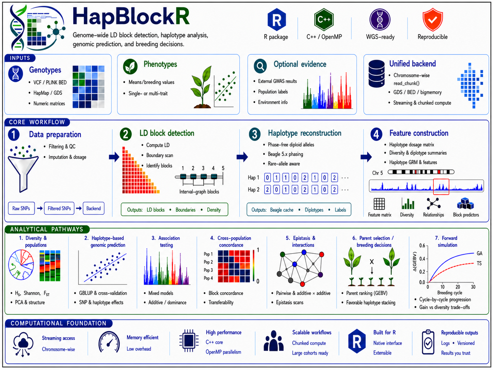

HapBlockR detects linkage-disequilibrium blocks and supports haplotype analysis, genomic prediction, parent selection, optimum-contribution selection, genomic mating, and core-collection design, as shown below:

The package is under active development. HapBlockR converts the data, breeding objectives and constraints supplied by the user into reproducible parent, cross and mating recommendations. Every decision-critical result carries quality-control, provenance, validation and uncertainty information, so recommendation relevance is driven principally by the quality of the input data and how accurately the parameters express the programme’s objectives — not by the package treating any output as ground truth.
Installation
HapBlockR requires R 4.3.0 or later.
Core installation
For routine use, install HapBlockR with its required dependencies:
install.packages("remotes")
install.packages("remotes")
remotes::install_github("FAkohoue/HapBlockR",
build_vignettes = TRUE,
dependencies = TRUE
)Set build_vignettes = FALSE to skip building the vignettes locally (they remain available on the package website). Required dependencies install automatically; some methods use optional packages or external tools and fail explicitly when the requested engine is unavailable.
Optional non-CRAN dependencies
Several HapBlockR methods use optional packages that are not distributed through CRAN. These dependencies must be installed separately when their corresponding functionality is required.
Bioconductor packages
gdsfmt and SNPRelate support GDS-backed genotype storage, conversion and analysis:
if (!requireNamespace("BiocManager", quietly = TRUE)) {
install.packages("BiocManager")
}
BiocManager::install(
c("gdsfmt", "SNPRelate"),
ask = FALSE,
update = FALSE
)GitHub packages
The following optional packages are installed directly from GitHub:
if (!requireNamespace("remotes", quietly = TRUE)) {
install.packages("remotes")
}
# Forward-in-time genomic simulation
remotes::install_github(
"vllrs/genomicSimulation",
upgrade = "never"
)
# Optional mating-design engine
remotes::install_github(
"Resende-Lab/SimpleMating",
upgrade = "never"
)
# DGSI and QGSI selection-index methods
remotes::install_github(
"FAkohoue/DesiredGainR",
upgrade = "never"
)The direct optional non-CRAN R dependencies are:
| Source | Package | Main use in HapBlockR |
|---|---|---|
| Bioconductor | gdsfmt |
GDS-backed genotype storage and access |
| Bioconductor | SNPRelate |
GDS conversion and SNPRelate genotype workflows |
| GitHub | genomicSimulation |
Forward-in-time genomic simulation |
| GitHub | SimpleMating |
Optional mating-design workflows |
| GitHub | DesiredGainR |
DGSI and QGSI selection-index methods |
After installing the required optional dependencies, install or reinstall HapBlockR:
install.packages("remotes")
remotes::install_github("FAkohoue/HapBlockR",
build_vignettes = TRUE,
dependencies = TRUE
)These packages are optional. A HapBlockR method that requires an unavailable dependency stops with an explicit installation message rather than silently changing the requested analytical engine.
External Beagle phasing
Beagle is an external Java program rather than an R package and is not distributed with HapBlockR. To use phase_with_beagle(), obtain a compatible Beagle 5.x JAR separately and provide its location through the function argument, package option or documented environment variable.
Java 8 or later must also be available:
system("java -version")See the phasing vignette for configuration and validation details:
vignette("HapBlockR-phasing")Quick example
library(HapBlockR)
data(ldx_geno)
data(ldx_snp_info)
data(ldx_blocks)
data(ldx_blues)
targets <- prepare_breeding_targets(
data.frame(
id = ldx_blues$id,
trait = "YLD",
value = ldx_blues$YLD,
precision = 1
),
input_type = "adjusted_mean",
precision_col = "precision"
)
prediction <- run_haplotype_prediction(
geno_matrix = ldx_geno,
snp_info = ldx_snp_info,
blocks = ldx_blocks,
blues = targets,
seed = 42,
min_reliability = 0.30,
verbose = FALSE
)
top_blocks <- select_top_blocks(
prediction$block_importance,
n = min(10L, nrow(prediction$block_importance))
)
parents <- select_parents_ga(
value_matrix = prediction$local_gebv[, top_blocks$block_id, drop = FALSE],
n_founders = 8,
seed = 42,
n_reps = 5,
verbose = FALSE
)
parents$selected
validate(parents)
summary(parents)Decision-critical objects like parents inherit from hapblockr_result: a versioned contract recording method, call, parameters, seed, sample/variant identifiers, input hashes, quality gates, warnings, exclusions, and decision/uncertainty tables. validate(), summary(), as.data.frame() and plot() all work on it. A failed validation gate must be resolved before a result is promoted to a breeding recommendation.
For the full walkthrough — target preparation, cross-validated prediction, GA and GA+TS parent selection, family quotas, optimum-contribution selection, core-collection design, feasibility screening, and export to a certified mating plan — see vignette("HapBlockR-full-pipeline").
Capability map
Documentation
The package website has the full function reference. Vignettes cover each topic in depth:
| Vignette | Covers |
|---|---|
HapBlockR-intro |
First orientation to the package |
HapBlockR-workflow |
Genotypes through a validated breeding decision |
HapBlockR-full-pipeline |
End-to-end run: targets to a certified mating plan |
HapBlockR-breeding-decisions |
Local GEBV to a crossing decision |
HapBlockR-programme-operations |
Breeding-target input contract, multi-trait index methods, feasibility and data exchange |
HapBlockR-phasing |
Configuring and validating external Beagle 5.x phasing |
HapBlockR-ld-metrics |
Standard r² and kinship-adjusted rV² |
HapBlockR-large-scale |
GDS/BED/bigmemory backends, memory and performance evidence |
open_breeder_guide() opens the versioned, source-backed Breeder’s Guide (PDF or HTML), which covers all decision tools, a worked numerical example, data-quality and feasibility checks, and interpretation guidance for quality-control gates and uncertainty:
open_breeder_guide(format = "pdf")
open_breeder_guide(format = "html")Its editable source is inst/guide/HapBlockR_Breeder_Guide.Rmd, rendered to the shipped PDF/HTML via tools/build_breeder_guide_accessible.cjs.
Reproducibility
For an auditable analysis:
set.seed(42)
packageVersion("HapBlockR")
sessionInfo()Retain the result object, source data release, input hashes, external-tool checksums, exclusions, warnings, validation output, and signed decision record. Do not place confidential germplasm or phenotype records in public issues or repositories.
Citation
citation("HapBlockR")Machine-readable citation metadata are provided in CITATION.cff. A DOI has not yet been assigned; do not cite an invented or provisional DOI.
Contributing and support
Read CONTRIBUTING.md, the code of conduct, security policy, and support guidance. Report reproducible bugs through the GitHub issue tracker.